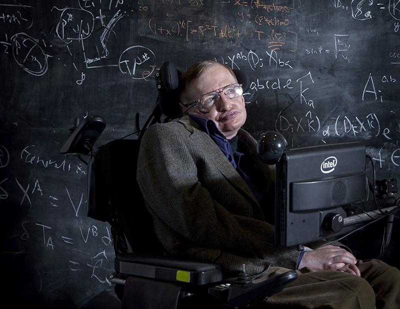
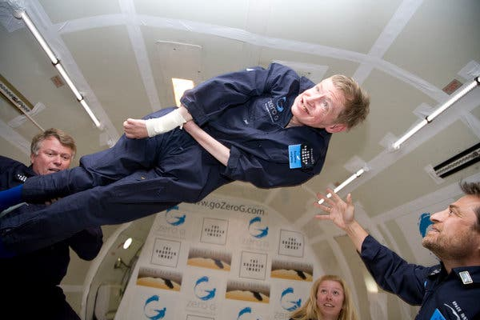
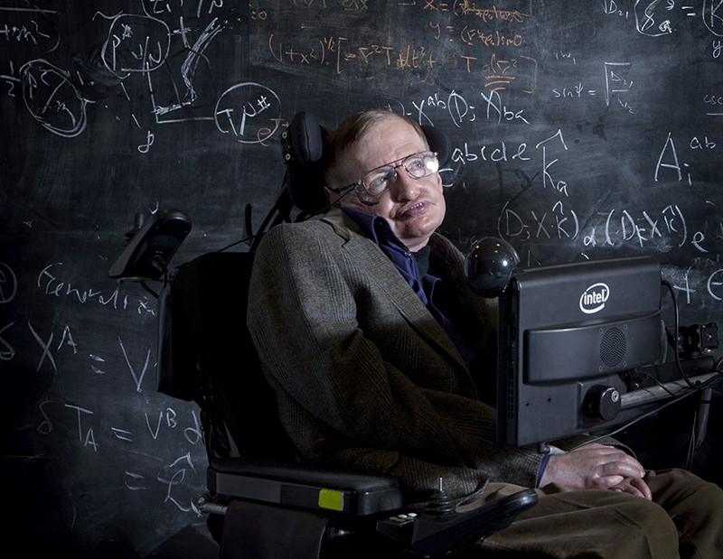
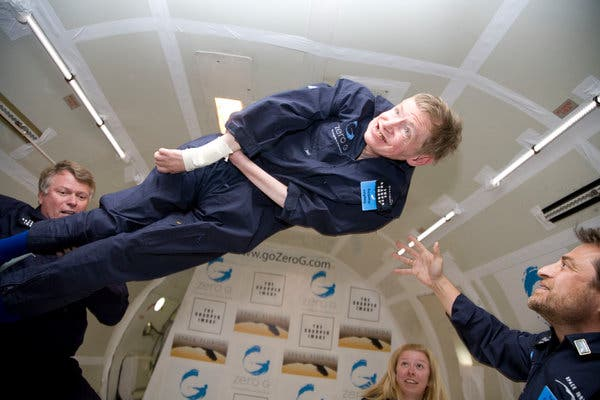

A tribute to Professor Stephen Hawking
1942-2018
 



Professor Stephen Hawking, one of the world’s greatest scientists.
Professor Hawking recently joined us at an event to celebrate the legacy of his
father, Dr Frank Hawking, who developed some of the first treatments for the
neglected tropical disease lymphatic filariasis.
Professor Hawking chose physics rather than biology as his field, and he will be
remembered for advancing our understanding of how the universe works and how
it came to be.
He was diagnosed with motor neurone disease in his early 20s and was
given only years to live. But he delighted in saying that although the
doctors may have given up on him, he and his family didn’t.
Writing for the United Nations in 2014, he said: “People with
disabilities are vulnerable because of the many barriers we face:
attitudinal, physical, and financial. Addressing these barriers is within
our reach and we have a moral duty to do so. Beyond that moral duty,
we would do well to remember the many other reasons to act.
Legislation introduced to assist the disabled today will benefit nearly
everyone at some point: almost all of us will be impaired at some time in
life or care for someone who is. Inventions such as optical character
recognition and brain-controlled technology have many other benefits
beyond helping people with disabilities.
“But, most importantly, addressing these barriers will unlock the
potential of so many people with so much to contribute to the world.
Governments everywhere can no longer overlook the hundreds of
millions of people with disabilities who are denied access to health,
rehabilitation, support, education, and employment – and never get the
chance to shine.”
Sightsavers CEO Dr Caroline Harper said: “This is such sad news and
our thoughts are with his family and carers. Professor Hawking was one
of the most original and brilliant minds of our times. His vision, wisdom
and humour will be greatly missed, but he leaves an inspiring personal
legacy, as well as a huge contribution to our knowledge of the cosmos.”
NOTE: THIS CONTENT IS NOT MINE IT IS USED JUST AS AN EXAMPLE